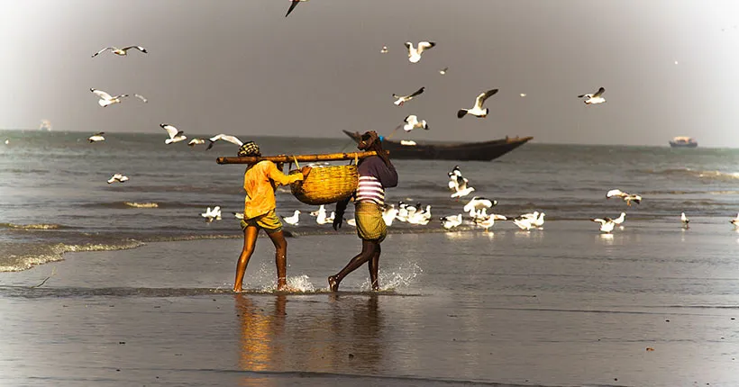

সুন্দরবনের দুবলার চর

স্থান
বাগেরহাট
যাতায়াতের পদ্ধতি
নদী পথে : খুলনা লঞ্চঘাট খেকে লঞ্চযোগে সুন্দরবনের দুবলার চর যাওয়া যাবে। রাতে ও সকালে লঞ্চ রয়েছে।
বিস্তারিত
চাঁদপাই রেঞ্জের আরেকটি গুরুত্বপূর্ণ জায়গা দুবলার চর। কুঙ্গা ও মরা পশুর নদের মাঝে দুবলা একটি বিচ্ছিন্ন দ্বীপ। এখানে লাল বুক মাছরাঙা, মদনটাক পাখির দেখা মেলে। এখানকার সৌন্দর্যের একটি দিক হচ্ছে হরিণের ঘাস খাবার দৃশ্য। দুবলার চর মূলত জেলে গ্রাম। মাছ ধরার সঙ্গে চলে শুঁটকি শোকানোর কাজ। বর্ষা মৌসুমের ইলিশ শিকারের পর বহু জেলে চার মাসের জন্য সুদূর কক্সবাজার, চট্টগ্রাম, বাগেরহাট, পিরোজপুর, খুলনা, সাতক্ষীরা থেকে ডেরা বেঁধে সাময়িক বসতি গড়ে সেখানে। মেহেরআলীর খাল, আলোরকোল, মাঝেরচর, অফিসকেল্লা, নারিকেলবাড়িয়া, মানিকখালী, ছাফরাখালী ও শ্যালারচর ইত্যাদি এলাকায় জেলে পল্লী স্থাপিত হয়। এই চার মাস তারা মাছকে শুঁটকি বানাতে ব্যস্ত থাকেন। এখান থেকে আহরিত শুঁটকি চট্টগ্রামের আসাদগঞ্জের পাইকারী বাজারে মজুদ ও বিক্রয় করা হয়। সুন্দরবনের পূর্ব বিভাগের সদর দপ্তর বাগেরহাট থেকে মাছ সংগ্রহের পূর্বানুমতিসাপেক্ষে বহরদার ও জেলেরা দুবলার চরে প্রবেশ করে থাকেন। দুবলার চর থেকে সরকার নিয়মিত হারে রাজস্ব পেয়ে থাকে। প্রতি বছর বিএলসি বা বোট লাইসেন্স সার্টিফিকেট, ডিএফসি বা ডেইলি ফুয়েল (জ্বালানি কাঠ) কঞ্জামশন ইত্যাদি প্রক্রিয়ায় বন বিভাগকে রাজস্ব প্রদান করে মৎস্য ব্যবসায়ীগণ সুন্দরবনে ঢোকার অনুমতি পান, এছাড়া আহরিত শুঁটকি মাছ পরিমাপ করে নিয়ে ফিরে আসার সময় মাছভেদে প্রদান করেন নির্ধারিত রাজস্ব।
প্রতি বছর কার্তিক মাসে (খ্রিস্টীয় নভেম্বর) হিন্দু ধর্মাবলম্বীদের রাসমেলা এবং পূণ্যস্নানের জন্যও দ্বীপটি বিখ্যাত। যদিও বলা হয়ে থাকে, ২০০ বছর ধরে এ রাসমেলা হয়ে চলেছে , তবে জানা যায়, ১৯২৩ খ্রিস্টাব্দে হরিচাঁদ ঠাকুরের এক বনবাসী ভক্ত, নাম হরিভজন (১৮২৯—১৯২৩), এই মেলা চালু করেন। প্রতিবছর অসংখ্য পুণ্যার্থী রাসপূর্ণিমাকে উপলক্ষ করে এখানে সমুদ্রস্নান করতে আসেন। দুবলার চরে সূর্যোদয় দেখে ভক্তরা সমুদ্রের জলে ফল ভাসিয়ে দেন। কেউবা আবার বাদ্যযন্ত্র বাজিয়ে ভজন-কীর্তন গেয়ে মুখরিত করেন চারপাশ। দুবলার চরের রাসমেলায় স্থানীয় লোকজন ছাড়াও দূর-দূরান্তের শহরবাসী এমনকি বিদেশি পর্যটকেরাও স্বতঃস্ফূর্তভাবে অংশ নিয়ে থাকেন। তিনদিনব্যাপী এ মেলায় অনেক বিদেশী পর্যটকেরও সমাগম হয়।